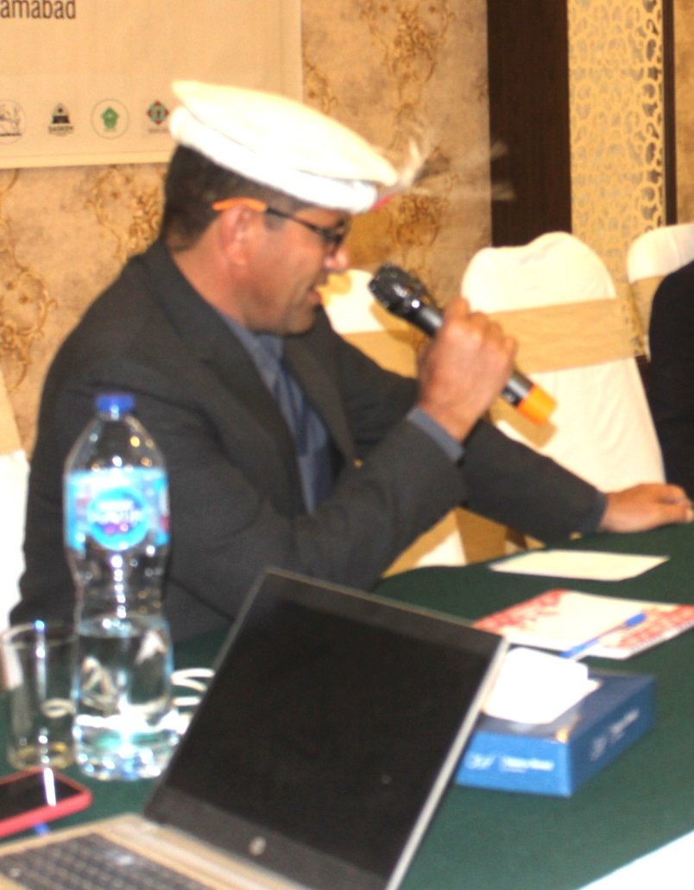
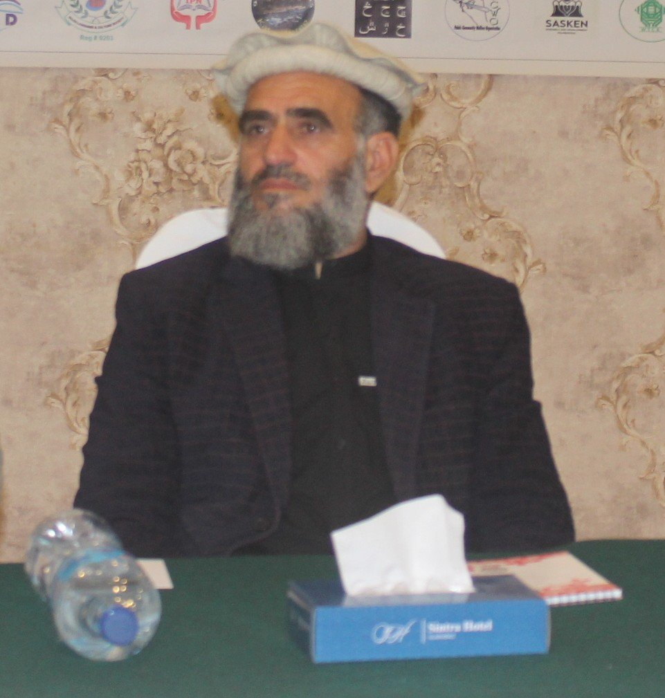

About FLI
Est. 2002 • Islamabad
Registration No. CRRFA/ICT/27
Impact Stories
In their own words: what changed when communities began writing, publishing and singing in their mother tongues.
Impact Stories
Stories of Those We Worked With

Our language was on the verge of disappearing before we began collaborating with FLI. Our community felt ashamed to speak our mother tongue, and we discouraged our children from using it. Now, thanks to FLI, our people proudly use our native language everywhere and people encourage their children to speak it as well. The documentation of Yadgha songs by FLI has encouraged more youth to sing in the Yadgha language, and the art of poetry and songwriting has flourished. The community now prefers to listen to songs in their mother tongue.

Before 2021, there was no tradition of writing in our mother tongue because there was no alphabet for our language. FLI, in coordination with community members, developed an orthography for the language, enabling people to write in their mother tongue. To date, seven books have been authored, bringing joy to our people. The FLI keyboard for phones and computers equips us to write in our mother tongue, and people have started using it on social media. Now, it is easier for people to write and read in their own language, and poets are documenting their poetry.